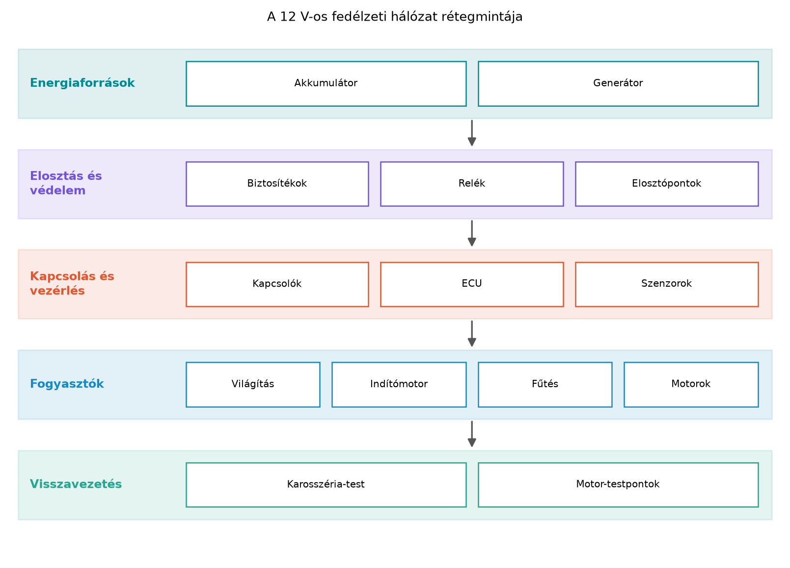
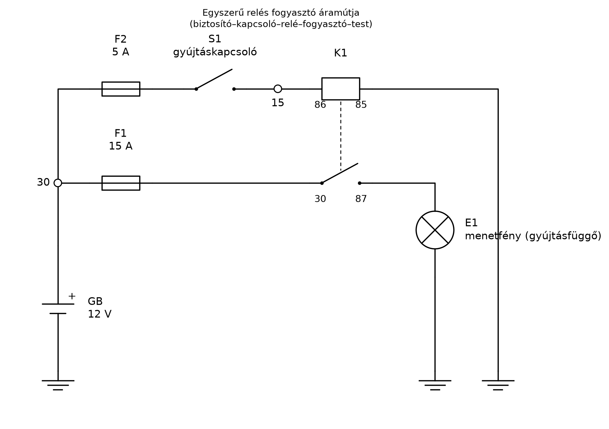

A műhelyben az egyik leggyakoribb villamos hibajelenség a „sejtelmes” ellátási probléma: például a tompított fényszóró nem világít, de a helyzetjelző igen; az ablaktörlő lassú, de az irányjelző rendben; az indítómotor kattog, de nem forgat. Ilyenkor a szerelő nem kezdheti el az alkatrészcserét csak azért, mert „biztos izzó hibás”. A gépjármű fedélzeti hálózata logikusan felépített, kapocsjelölései pedig nemzetközileg ismert számok és rövidítések. Ha megtanulod a 30, 31, 15, 50, 58, 87 jelű kapcsokat és a gyártói áramútrajz olvasását, akkor nemcsak gyorsabban találod meg a hibát, hanem elkerülöd a felesleges bontást és a rossz alkatrész cseréjét. Ezt a tudást a Vezetékek, csatlakozók, biztosítók, relék és fénykábelek, a(z) Az indítóakkumulátor: felépítés, jellemzők, kiválasztás és töltés és a Járműazonosítás, adatbázisok, javítási utasítások és kapcsolási rajzok alfejezetekben fogjuk napi szinten használni.
Képzeld el a 12 V-os fedélzeti hálózatot úgy, mint egy város villamos hálózatát. Az akkumulátor és a generátor a „erőmű”, a különböző keresztmetszetű vezetékek az „utcai fővezetékek és leágazások”, a biztosítók a „kapcsolósorok”, a kapcsolók és relék a „vezérelt kapcsolók”, a fogyasztók pedig az „otthonok”. A karosszéria mint közös negatív visszavezető olyan, mint a városi földhálózat: minden fogyasztó ehhez csatlakozik vissza. Az alábbi rétegábra ezt a szerkezetet mutatja.

A rétegek fentről lefelé mutatják az energiafolyam irányát: az energiaforrások adják a feszültséget, az elosztás és védelem továbbítja, a kapcsolás és vezérlés szabályozza, a fogyasztók hasznosítják, a test pedig lezárja az áramkört.
Definíció. A gépjármű fedélzeti hálózata a jármű villamos energiát termelő, tároló, elosztó, vezérlő és fogyasztó villamos berendezések összessége, beleértve a vezetékeket, csatlakozókat, biztosítékokat, reléket, kapcsolókat és a közös testelést.
A 12 V-os gépjármű-fedélzeti hálózat egyvezetékes rendszer: az akkumulátor pozitív pólusáról egy vezetéken jut az áram a fogyasztóhoz, a visszavezetés pedig a jármű fémvázán, a testen keresztül történik az akkumulátor negatív pólusához. A test tehát nem „üres” pont; a testelési helyek korróziója, lazulása ugyanolyan áramköri hibát okoz, mint egy elszakadt vezeték.
Szabály. A járműtestet soha ne kezeld egyszerű mechanikai tartóelemként. A testkötés az áramkör része; ha egy testpont meglazult vagy oxidált, a fogyasztó feszültségesése megnő, és a berendezés nem működik megfelelően.
Fő egységek:
A feszültség szintje általában 12 V (személygépkocsik, kishaszongépjárművek) vagy 24 V (haszongépjárművek, autóbuszok), a 48 V-os hálózat pedig a mild hibrid rendszerekben jelenik meg. A 48 V-os rendszer lehetővé teszi a nagyobb villamos teljesítményű fogyasztókat, például elektromos kompresszort, indítógenerátort, anélkül, hogy a hagyományos 12 V-os fogyasztókat le kellene cserélni. A nagyfeszültségű rendszerek biztonságát a Nagyfeszültségű rendszerek biztonsága tárgyalja.
Definíció. Az egyszerű áramkör az energiaforrás pozitív pólusából kiinduló, a fogyasztón át a negatív pólusra visszatérő zárt hurok.
Definíció. A bővített áramkör az egyszerű áramkör kiegészítve védő-, kapcsoló- és vezérlőelemekkel: biztosítóval, kapcsolóval, relével, csatlakozókkal, vezérlőegységgel, hogy az áramkör biztonságosan és szabályozottan működjön.
Összefüggés. Mindig igaz, hogy az áramkör zárt; a feszültségforrás pólusaitól nem szakadhat meg a vezetőképes kapcsolat. A gyártói rajzon a testpontok gyakran ugyanoda futnak, de a járművön egymástól távol vannak. A Kirchhoff-huroktörvény (a Kirchhoff-törvények, összetett hálózatok, osztók és hídkapcsolás alfejezet szerint) itt is érvényes: egy zárt hurokban a forrásfeszültség és a feszültségesések összege nulla, ezért a vezeték és testellenállás növekedése a fogyasztón kisebb feszültséget eredményez.
Az áramútrajz logikája tehát: táppont – védelem – kapcsolás/relé – fogyasztó – testpont. A következő kapcsolási rajz ezt a láncot mutatja, gyújtáskapcsolót és relét is tartalmazó, gyújtásfüggő fogyasztóval (például menetfénnyel). A tompított fényszórót a valóságban nem a gyújtáskapcsoló, hanem a világításkapcsoló és a fényváltó (56b ág) vezérli; itt a gyújtásfüggő vezérlés elvét mutatjuk be.

A rajz jól mutatja a két párhuzamos hurkot. A főáramkör: 30-as táppont → F1 biztosító → K1 relé munkaérintkezője (30–87) → E1 fogyasztó (menetfény) → test. A vezérlő áramkör: 30 → F2 biztosító → S1 gyújtáskapcsoló → 15-ös kapocs → K1 relétekercs (86–85) → test; a vezérlőágat is saját biztosító védi. Amíg az S1 kapcsoló nyitott, a relé tekercse feszültségmentes, a 30–87 munkaérintkezőn nincs áram, ezért a lámpa nem világít. Ha a gyújtáskapcsoló „üzem” állásba kerül, a 15-ös ág feszültséget kap, a relé behúz, a 30–87 érintkező zár, és a lámpa világít. A relé szerepe az, hogy a kis vezérlőáramú kapcsolóval nagy fogyasztói áramot kapcsoljunk.
Továbbvitt eredmény. A kapocsjelek (30, 31, 15, 50, 58, 87) és az áramútrajz-olvasási lánc módszerét a Vezetékek, csatlakozók, biztosítók, relék és fénykábelek alfejezetben a vezeték-, biztosító- és reléhibák felismerésére, a(z) Az indítóakkumulátor: felépítés, jellemzők, kiválasztás és töltés alfejezetben az akkumulátor-bekötés és -lekötés sorrendjére, a Járműazonosítás, adatbázisok, javítási utasítások és kapcsolási rajzok alfejezetben pedig a gyártói javítási rajzok beszerzésére és értelmezésére használjuk.
A járművillamossági rajzokon a csatlakozók, kapcsolók és relék kivezetéseit gyakran nem egyedi gyártói jelöléssel, hanem a DIN 72552 szerinti, ma már nemzetközileg elterjedt kapocsszámokkal jelölik. Ezt a megoldást a gyártók átvették; azonban a konkrét járművön mindig a gyártói rajz és a kimért kapocsfelirat a mérvadó, mert egyes gyártók saját kiegészítéseket alkalmaznak.
Előírás. A kapocsjelölések a DIN 72552 szerinti hazai gyakorlatot tükrözik (30, 31, 15, 50, 58, 56a, 56b, 87, 87a, 85, 86, D+, B+). A pontos kapcsolatot a gyártói kapcsolási rajz alapján kell meghatározni (ellenőrizendő: DIN 72552 hatályos kiadása és a gyártói dokumentáció).
Az alábbi táblázat a leggyakoribb kapocsjeleket foglalja össze.
| Kapocs | Jelentés | Jellemző helye |
|---|---|---|
| 30 | állandó pozitív, közvetlenül az akkumulátorról (a fogyasztói ágakban biztosítón át) | főelosztó, relék 30, gyújtáskapcsoló bemenete |
| 31 | test, negatív pólus | karosszéria, motor, akkumulátor negatív kábel |
| 15 | gyújtáskapcsolás utáni pozitív | gyújtáskapcsoló kimenete, injektor, műszerfal |
| 50 | indítómotor vezérlő ág | indítórelé 50, gyújtáskapcsoló „start” állása |
| 58 | helyzetjelző világítás | világításkapcsoló, rendszámtábla, műszerfal |
| 56a/56b | távolsági/tompított fény | fényváltó, fényszóró, fényváltó relé |
| 85/86 | relétekercs | 86 általában vezérlő pozitív, 85 test (ellenőrizendő) |
| 87/87a | relé munka- és nyugvóérintkező | fogyasztó táplálása (87), alaphelyzet (87a) |
| D+/B+ | generátor csatlakozók | töltésjelző, főáramkör |
A kapocsjelek értékei és értelmezése tanulási példák (ellenőrizendő: gyártói adat és az adott járművön mért kapocsfelirat).
Fontos, hogy a 15 és a 30 egymástól eltérő üzemállapotot jelöl. A 30 akkor is feszültség alatt van, ha a gyújtás ki van kapcsolva, ezért a 30-as ágon lévő zárlat akkor is lemerítheti az akkumulátort, amikor a jármű áll. A 15 csak a gyújtás bekapcsolása után kap feszültséget; ezért a 15-ös szakadás vagy feszültségesés jellemzően a motor beindítása után, a menet közbeni fogyasztóknál okoz hibát.
A 31 testpont nem egyszerűen „nulla”. A testpontok
korrodálódnak, lazulnak, és az átmeneti ellenállásuk megnőhet. A rossz
testelés tünete például az, hogy a fényszóró tompított fénye gyengül, de
ha a motortérben egy másik testpontot használsz mérési
referenciapontként, a hiba nem látszik.
A gyártói javítási dokumentációkban három ábrázolási módot találsz:
A gyártói kapcsolási rajzok gyakran kombinálják ezeket: az
áramútrajzon megtalálod a lábszámot vagy a csatlakozó jelét, az
elhelyezési rajzon pedig a járműben való helyét. A gyártói rajzon a
biztosítékok, relék, testpontok és kapocsjelek mellett a
vezeték-színkódok is szerepelnek; például a GN-BK
zöld-fekete vezetéket jelöl (a gyártói kódja eltérő lehet).
Az ábrán ugyanaz a hatpólusú csatlakozó látható érintkezőoldalról (a) és vezetékoldalról (b): a lábsorrend tükörképben jelenik meg, a tájolást a kódolóborda adja. A (c) részábra a gyártói rajzrészletet mutatja, amelyen a nézet iránya meg van adva – mérés előtt mindig ezt kell leolvasni.
Példa 1 – Rajzolvasási gyakorlat. Az előző kapcsolási rajz alapján, gyújtáskapcsoló bekapcsolt állapotában írd le a menetfény (gyújtásfüggő fogyasztó) áramútját.
Megoldás. A gyújtáskapcsoló S1 zár, a 30-as feszültség a 15-ös kapocsra jut, a relé tekercsén (86–85) áram folyik, a relé behúz. A főáramút: 30 → F1 → K1 érintkező (30–87) → E1 menetfény → test. A fogyasztó tehát a 30-as ágról kapja a feszültséget, de csak akkor, ha a relé zár.
Példa 2 – Biztosítékméretezés. Egy 12 V-os hálózaton két párhuzamosan kapcsolt 55 W-os tompított izzó (bal + jobb oldal) ugyanarról a biztosítékról táplálkozik. Mekkora áramot vesz fel a két izzó, és mekkora biztosítékot válassz?
Számítás.
Adott:
;
.
Keresett: áramerősség
.
A biztosítékot a tartós áram fölé kell méretezni, de a vezeték keresztmetszete határozza meg. A tanulási példában 15 A-es biztosítékot választunk, mert a 10 A-es biztosíték már a határon lenne. Az ellenőrzés: , a számítás helyes. A pontos értéket a gyártói javítási adat adja meg (ellenőrizendő).
Példa 3 – Hibás értelmezés kijavítása. Egy tanuló a rajzon a relé 87a kivezetéséhez köti a fényszórót, mert „ott is van feszültség alaphelyzetben”. Mi történik?
Hiba. A 87a a nyugvó (alaphelyzetben zárt) érintkező. Ekkor a lámpa a relé behúzása előtt ég, amikor a relét vezérlik, kialszik; ez inverz logika. A lámpa vezetékét a 87 munkaérintkezőre kell kötni.
Az áramútrajz olvasásakor a következőket ellenőrizd:
Ügyfélpanasz. A jobb oldali tompított fényszóró időnként kialszik, de a bal oldal folyamatosan világít. A műhelyben a gyártói áramútrajzot használjuk. A rajz szerint mindkét oldal ugyanarról a reléről táplálkozik, de külön biztosítékkal és külön vezetékkel. A gyártói elhelyezési rajzból megkeressük a közös relé 87 kimenetét, a jobb oldali biztosítékot és a jobb lámpa csatlakozóját.
Mérés: a relé 87 kimenetén mérhető, a jobb oldali lámpa csatlakozóján viszont csak , a bal oldali lámpa csatlakozóján . A jobb oldali vezetékszakaszon tehát feszültségesés van, ami túl nagy. Közelítésként az izzó teljesítménye a feszültség négyzetével arányos (állandó izzószál-ellenállást feltételezünk), ezért a feszültségcsökkenés miatt az izzó teljesítménye a névleges érték kb. háromnegyedére esik:
A valóságban az izzószál ellenállása hidegebb állapotban kisebb, ezért a teljesítménycsökkenés valamivel kisebb, a fényáram viszont ennél jóval erősebben csökken. Az 55 W névleges érték 12–13,2 V-os vizsgálati feszültségre vonatkozik, nem 13,6 V-ra (ellenőrizendő: az izzó adatlapja).
Az ellenőrzés során a jobb oldali csatlakozó bemenete barnán égett, a műanyag csatlakozóház deformálódott. A hiba oka a csatlakozó korróziója és átmeneti ellenállása volt. A csatlakozót a gyártói előírás szerint kicseréljük, a vezetéket visszavágjuk, új érintkezőt préselünk, zsugorcsövet húzunk rá. Az új mérés: a jobb lámpa csatlakozóján , a feszültségesés ; a fényszórók egyformán világítanak. Tanulság: úgy tűnhet, hogy az izzó hibás, de a rajz és a feszültségesés-mérés alapján a csatlakozó volt a hibás.
Rajzolvasási munkalap (nem igényel a 12 V-os hálózaton alkatrészcserét, mérési tervet ad).
Cél: a gyártói áramútrajz alapján egy fogyasztó tápjának, kapcsolásának és testpontjának beazonosítása.
Szükséges dokumentumok és eszközök: gyártói javítási kézikönyv, áramútrajz- és csatlakozó-nézet nyomtatvány, multiméter, akkumulátor-teszter, adott jármű.
Biztonsági korlát. A feladat tanműhelyi környezetre, oktató felügyeletére és a gyártói javítási utasítás betartására vonatkozik; a megadott értékek tanulási példák.
Figyelem. A mérés során ne zárj rövidre vezetéket a testtel; a 30-as ág akkumulátorcsúcsáramot adhat. Kapcsold ki a gyújtást (vedd ki a kulcsot), mielőtt csatlakozókat szétszednél, ha a gyártói utasítás ezt előírja.
Munkalépések:
Ellenőrzési pont: gyújtás kikapcsolva a 30-as ponton mérhető, a 15-ös ponton nincs feszültség; gyújtás bekapcsolva a 15-ös ponton feletti érték mérhető. A pontos értékek a jármű akkumulátortöltöttségétől függnek (ellenőrizendő).
Hiba 1 – 30 és 15 összetévesztése. A szerelő a jármű álló, gyújtás ki helyzetében a 15-ös ágat vizsgálja, nincs feszültség, ezért tévesen szakadást vagy üres akkumulátort állapít meg. Helyes eljárás: ellenőrizd a gyártói rajzon, hogy az adott ág melyik kapocsról táplálkozik, és a mérés előtt állítsd be a megfelelő üzemállapotot.
Hiba 2 – A relé 87 és 87a keverése. A relé munka- és nyugvóérintkezőinek felcserélése miatt a fogyasztó fordított logikával működik. Mindig a kapocsjelölés és a rajz szerint azonosítsd az érintkezőt.
Hiba 3 – Testpont figyelmen kívül hagyása. A szerelő csak a pozitív oldalt méri, a testpontot nem ellenőrzi. Pedig a rossz testelés miatti feszültségesés pontosan ugyanolyan tünetet okoz, mint a rossz tápellátás. Megoldás: terhelés alatt mérd meg a testpont és az akkumulátor negatív közötti feszültségesést.
Hiba 4 – Rossz évjáratú rajz használata. A járművillamossági rajzok gyártói módosításokkal változnak. Az aktuális modellévre érvényes rajz nélkül téves következtetésre juthatsz.
1. feladat (A). Fogalmazd meg, mit jelölnek a 30, 31, 15, 50, 58 és 87 kapocsjelek, és mondj mindegyikre egy-egy járműben található példát.
2. feladat (A). Egy 12 V-os hálózaton az izzó feszültsége , teljesítménye . Számítsd ki az izzón átfolyó áramot és az izzó ellenállását.
3. feladat (B). Az előző kapcsolási rajzban gyújtáskapcsoló zárva, a relé behúz. Rajzold le vagy írd le lépésenként a menetfény áramútját a 30-as tápponttól a testig, beleértve a vezérlő áramkört is.
4. feladat (B). Egy fényszórókörben két 55 W-os izzó párhuzamosan van kapcsolva, a gyártói rajz szerint egy relé 87 kivezetése táplálja őket. Mekkora áram folyik a relé 30–87 munkaérintkezőjén? Mekkora biztosíték illik a körbe, ha a biztosítékot a tartós áramnál legalább 25%-kal nagyobbra választjuk?
5. feladat (C). Egy járművön a bal tompított fényszóró rendben világít, a jobb oldali gyenge. A gyártói rajz szerint mindkét izzó külön vezetéken, közös reléről táplálkozik. A relé 87 kimenetén -ot mérsz; a bal izzó csatlakozóján -ot, a jobb izzó csatlakozóján -ot. Állíts fel diagnosztikai hipotézist, és javasolj mérési sort a hiba behatárolására.
6. feladat (D). Az indítómotor nem forgat, csak kattog. A gyártói rajz szerint az indítórelé tekercs a gyújtáskapcsoló 50-es kimenetéről kap tápot, a relé munkaérintkezője a 30-as feszültséget kapcsolja az indítómotorra. Milyen sorrendben mérnél a 30, 50 és 31 kapcsokon, hogy eldöntsd, a gyújtáskapcsoló, a relé, a vezeték vagy a test a hibás?
Önellenőrzés – válaszok
1. feladat (A).
30: állandó pozitív (pl. akkumulátorról a biztosítékdobozba).
31: test/negatív (pl. karosszéria, motor).
15: gyújtás utáni pozitív (pl. injektor, műszerfal).
50: indítóvezérlő (pl. indítórelé tekercs).
58: helyzetjelző világítás (pl. rendszámtábla-világítás).
87: relé munkaérintkezőjének kimenete a fogyasztóhoz.
2. feladat (A).
.
.
3. feladat (B).
Vezérlő hurok: 30 → S1 (30–15) → K1 tekercs (86–85) → test.
Fő hurok: 30 → F1 → K1 30–87 (zárt) → E1 → test.
A relé a vezérlő áramkör zárása után kapcsolja a fő áramkört.
4. feladat (B).
Összes teljesítmény:
.
Reléáram:
.
Biztosíték legalább
;
a kereskedelemben kapható értékekből 15 A-es biztosítékot választunk
(tanulási példa; ellenőrizendő: gyártói adat).
5. feladat (C).
Hipotézis: a jobb oldali vezetékszakaszban vagy csatlakozóban nagy az
átmeneti ellenállás. Mérési sor:
- relé 87 kimenet feszültsége a testhez képest terhelés alatt;
- jobb oldali biztosíték előtti és utáni feszültség;
- jobb oldali csatlakozó előtti és utáni feszültség;
- jobb oldali izzó testpontja és az akkumulátor negatív közötti
feszültségesés.
A hiba helyén nagy feszültségesést mérünk.
6. feladat (D).
Mérési sorrend:
- gyújtás ki: a 30-as kapocs és a test között
akkumulátorfeszültség;
- indítóállásban: mérj az 50-es kapocs és a test között; ha nincs
feszültség, a gyújtáskapcsoló vagy az 50-es vezeték hibás;
- mérj a relé tekercs testoldalán és a relé munkaérintkezőjének
kimenetén;
- mérj az indítómotor 30-as csatlakozóján és az indítómotor
testpontján.
A feszültség hiánya vagy a nagy feszültségesés behatárolja a hibát.
A gépjármű fedélzeti hálózata egyvezetékes rendszer: a pozitív vezeték viszi az energiát a fogyasztóhoz, a visszavezetés a testen történik. Fő egységei: energiaforrások, elosztás és védelem, kapcsolás és vezérlés, fogyasztók, testpontok. Az áramút mindig zárt hurok: táppont – biztosító – kapcsoló/relé – fogyasztó – test. A DIN 72552 szerinti kapocsjelek közül a 30 állandó pozitív, a 31 test, a 15 gyújtás utáni pozitív, az 50 indítás, az 58 helyzetjelző, a 87 relé munkaérintkező. A gyártói áramútrajzokon az áramút szerinti, elhelyezési és csatlakozó-nézet típusú rajzokat különböztetjük meg. A hibakeresés során előbb a rajzból azonosítjuk be a fogyasztó táppontját, kapcsolóját és testpontját, majd a járművön feszültségméréssel és feszültségesés-méréssel ellenőrizzük az egyes szakaszokat. Továbbvitt eredmény. A kapocsjelek és az áramútrajz-olvasás módszertanát a Vezetékek, csatlakozók, biztosítók, relék és fénykábelek, a(z) Az indítóakkumulátor: felépítés, jellemzők, kiválasztás és töltés és a Járműazonosítás, adatbázisok, javítási utasítások és kapcsolási rajzok alfejezetekben alkalmazzuk tovább.
Forrástípusok: DIN 72552 kapocsjelölések; MSZ EN 60617 / IEC 60617 rajzjelek; gyártói javítási kézikönyvek kapcsolási rajzai; járművillamossági szakkönyvi alapok.
Ellenőrizendő állítások:
- a DIN 72552 pontos jelölési rendszere és a felsorolt kapocsjelek
hozzárendelése;
- a 85/86 relétekercs-kapcsok konkrét polaritása (86 pozitív, 85 test)
gyártótól függhet;
- a 12/24/48 V-os hálózat és a HV-rendszer határértékei;
- a biztosítékok és feszültségesési határértékek tanulási példák,
gyártói adat szerint változhatnak;
- a gyártói vezetékszín-kódok pontos értelmezése.